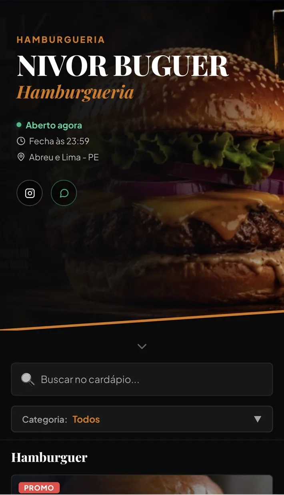
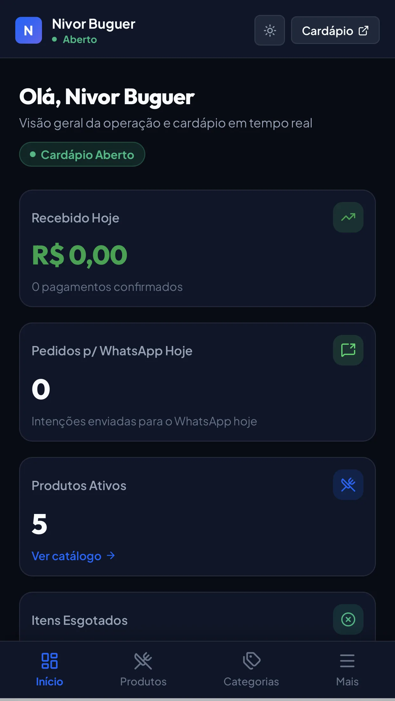
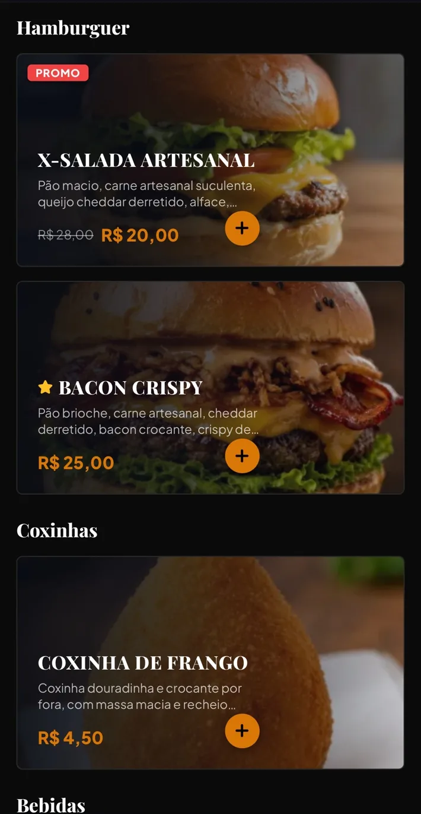
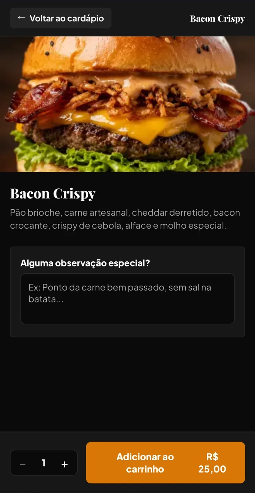
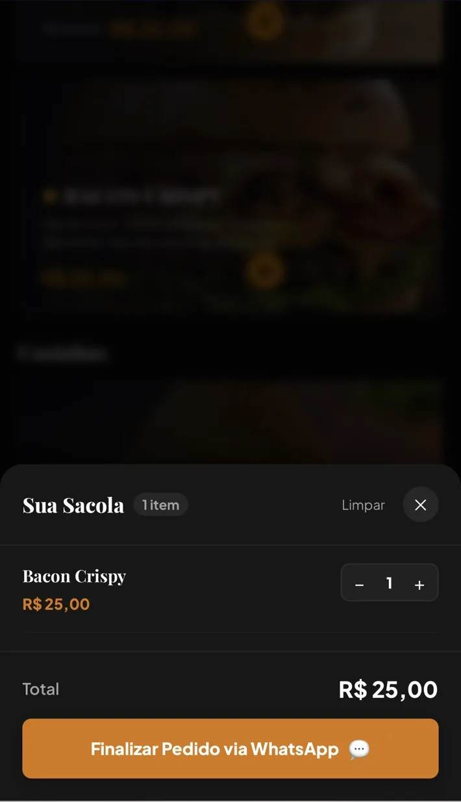
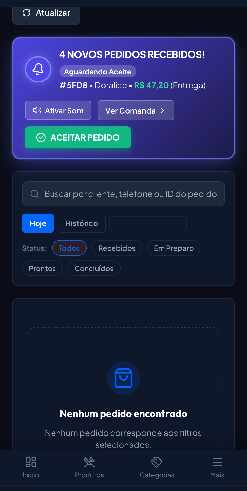

🛍
Cardápio visual
Produtos com foto, descrição, preço e promoção em uma apresentação profissional.
Apresente seus produtos com uma experiência profissional, organize pedidos e gerencie o cardápio em um painel simples — sem depender de PDF, foto ou mensagem confusa no WhatsApp.


Uma experiência pensada para quem compra no celular e para quem precisa gerenciar a operação sem complicação.
Produtos com foto, descrição, preço e promoção em uma apresentação profissional.
Seu cliente encontra mais rápido o que quer, sem rolar uma lista infinita.
Atualize produtos, valores, categorias e disponibilidade pelo painel.
Organize a escolha do cliente e conduza o pedido até o atendimento.
Cadastre e edite seu catálogo sem depender de designer.
Acompanhe indicadores e tenha uma visão mais clara do movimento.
Fotos grandes, preços claros, promoções visíveis e uma navegação feita para tela pequena. Facilite a escolha e reduza o atrito até o pedido.




Você não precisa entrar em um sistema pesado para fazer uma alteração simples. O painel concentra o que importa para manter seu cardápio atualizado e acompanhar a operação.
Escolhe o plano e envia as informações do estabelecimento.
Preparamos a estrutura inicial para uma apresentação profissional.
Coloque na bio, WhatsApp, Instagram e onde seus clientes já estão.
Uma assinatura direta, sem taxa de implantação nesta oferta e sem amarrar seu negócio a uma fidelidade longa.
Nivor Cardápio Digital
Não. O cardápio funciona pelo navegador e pode ser acessado pelo celular através de um link.
Sim. Ele navega pelo cardápio, escolhe os itens e segue o fluxo de pedido do estabelecimento.
Sim. O painel permite gerenciar produtos, categorias, disponibilidade e preços.
Nesta oferta, não. Você paga apenas R$ 79,90 por mês.
Não. Você pode cancelar quando quiser, conforme as condições da contratação.
Sim. Há uma demonstração pública para você testar a experiência.